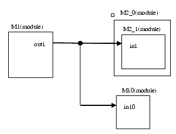
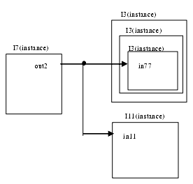

Description
This rule detects if the mandatory connections are well connected.Users can describe the block information in a Tcl file based on the following format.In case the user specifies the block by module name:rule_set_parameter -rule NTL_CON27 -parameter MANDATORY_MODULE_CONNECTION -value {ModuleName_of_the_Sender1.pinName, ModuleName_of_the_Receiver.PinName1, ModuleName_of_the_Receiver.PinName2, ..., ModuleName_of_the_Sender2.PinName, ModuleName_of_the_Receiver.PinName1, ...}
In case the user specifies the block by instance name: rule_set_parameter -rule NTL_CON27 -parameter MANDATORY_INSTANCE_CONNECTION -value {InstanceName_of_the_Sender1.PinName, InstanceName_of_the_Receiver.PinName1, InstanceName_of_the_Receiver.PinName2, ..., InstanceName_of_the_Sender2.PinName, InstanceName_of_the_Receiver1.PinName ...}
User specifies the Tcl file with +tcl_config option. Leda checks the block described in the Tcl file
leda> leda -top top test.v +tcl_config+script.tcl
Policy
DESIGN
Ruleset
CONNECTIVITY
Language
VHDL/Verilog
Type
Hardware
Severity
Error
rule_set_parameter -rule NTL_CON27 -parameter MANDATORY_MODULE_CONNECTION -value {M1.out1 M2_1.in1 M3_2.in1}

rule_set_parameter -rule NTL_CON26 -parameter MANDATORY_INSTANCE_CONNECTION -value {top.I1.out1 top.I2.I2.in1, top.I7.out2 top.I3.I3.I3.in1}
